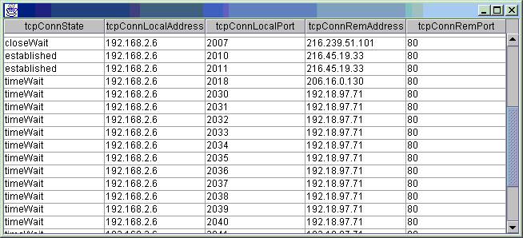

/* * Copyright (c) 2002 iReasoning Networks. All Rights Reserved. * * This SOURCE CODE FILE, which has been provided by iReasoning Networks as part * of an iReasoning Software product for use ONLY by licensed users of the product, * includes CONFIDENTIAL and PROPRIETARY information of iReasoning Networks. * * USE OF THIS SOFTWARE IS GOVERNED BY THE TERMS AND CONDITIONS * OF THE LICENSE STATEMENT AND LIMITED WARRANTY FURNISHED WITH * THE PRODUCT. * * IN PARTICULAR, YOU WILL INDEMNIFY AND HOLD IREASONING SOFTWARE, ITS * RELATED COMPANIES AND ITS SUPPLIERS, HARMLESS FROM AND AGAINST ANY * CLAIMS OR LIABILITIES ARISING OUT OF THE USE, REPRODUCTION, OR * DISTRIBUTION OF YOUR PROGRAMS, INCLUDING ANY CLAIMS OR LIABILITIES * ARISING OUT OF OR RESULTING FROM THE USE, MODIFICATION, OR * DISTRIBUTION OF PROGRAMS OR FILES CREATED FROM, BASED ON, AND/OR * DERIVED FROM THIS SOURCE CODE FILE. */ import com.ireasoning.protocol.snmp.*; import javax.swing.*; import javax.swing.table.*; /** * This class demonstrates retrieving SNMP table and polling table periodically. * <pre> * Example: * java snmpgettable localhost tcpConnTable * java snmpgettable localhost iftable * java snmpgettable localhost ifTable * java snmpgettable -o localhost ipRouteTable * </pre> * * Example Result:java snmpgettable localhost tcpConnTable
public class snmpgettable extends snmp { public static void main(String[] args) { snmpgettable s = new snmpgettable(); s.parseOptions(args, "snmpgettable"); s.getTable(); } private void getTable() { try { SnmpSession session = new SnmpSession(_host, _port, _community, _community, _version, _transportLayer); if(_isSnmpV3) { session.setV3Params(_user, _authProtocol, _authPassword, _privProtocol, _privPassword, _context, null); } //Loading necessary mibs already handled in super class (snmp.java) SnmpTableModel table = session.snmpGetTable(_oids[0]);// _oids[0] is the table name like "tcpConnTable" if(table == null) { System.err.println( "Table not found in loaded MIBs"); return; } SnmpOID authFailureOID = table.getAuthFailureOID(); if(authFailureOID != null) { System.out.println( "Authentication failed. Reason:"); snmp.printAuthFailReason(authFailureOID); return; } //print to standard out for (int i = 0; i < table.getRowCount() ; i++) { print(table.getRow(i)); } // print(session.snmpGetTableColumn("ifSpeed")); //get ifSpeed column table.setTranslateValue(true);// to use values defined in MIB table.startPolling(30);//poll table every 30 seconds //show the result in Swing's JTable showTable(table); // Thread.sleep(45 * 1000); // table.refreshNow(); // Thread.sleep(45 * 1000); // System.out.println( "To stop polling"); // table.stopPolling(); // session.close();// !!! Do NOT close session, since it's used by polling thread } catch(Exception e) { System.out.println(e); e.printStackTrace(); } } /** Displays table in a JFrame */ public static void showTable(TableModel model) { JFrame f = new JFrame(); JTable jt = new JTable(model); jt.setAutoCreateColumnsFromModel(true); JScrollPane pane = new JScrollPane(jt); f.getContentPane().add(pane); f.setSize(790, 590); f.setVisible(true); f.addWindowListener(new java.awt.event.WindowAdapter() { public void windowClosing(java.awt.event.WindowEvent e) { System.exit(0); } }); } // ---------------------------------------------------------------------- // Parsing command line options // ---------------------------------------------------------------------- protected void printExample(String programName) { System.out.println( "java " + programName + " localhost tcpConnTable"); System.out.println( "java " + programName + " localhost iftable"); System.out.println( "java " + programName + " localhost ifTable"); System.out.println( "java " + programName + " -o localhost ipRouteTable"); } }// end of class snmpgettable
